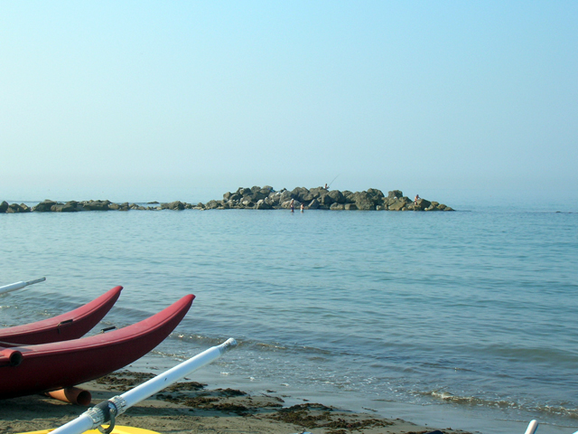
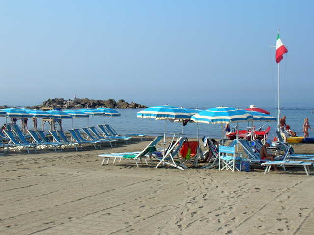
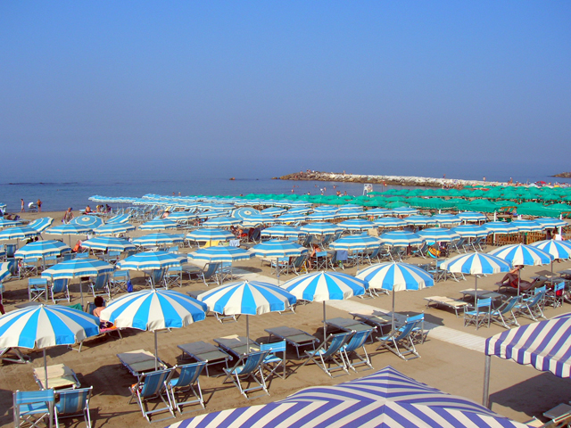

La Spiaggia

Ogni ombrellone è dotato di due sdraio, a richiesta si possono avere lettini prendisole e sedie del tipo regista per le persone più anziane che non riescono a sedersi sulle sdraio.

Per raggiungere i posti assegnati in spiaggia ci sono ampie pedane in cemento che favoriscono l'accesso anche a persone disabili. È attivo il servizio di chiamata telefonica in spiaggia.

Inoltre validi istruttori tengono corsi di nuoto, vela e ginnastica a corpo libero.